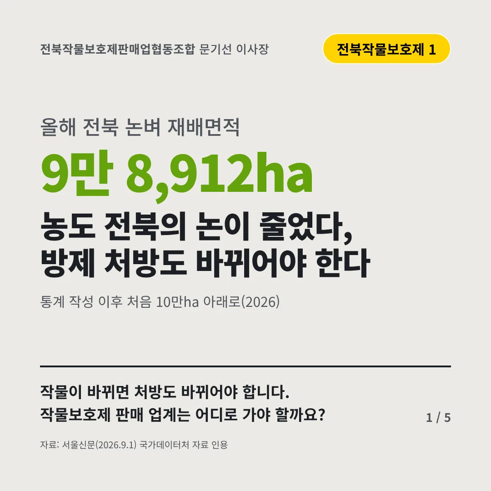
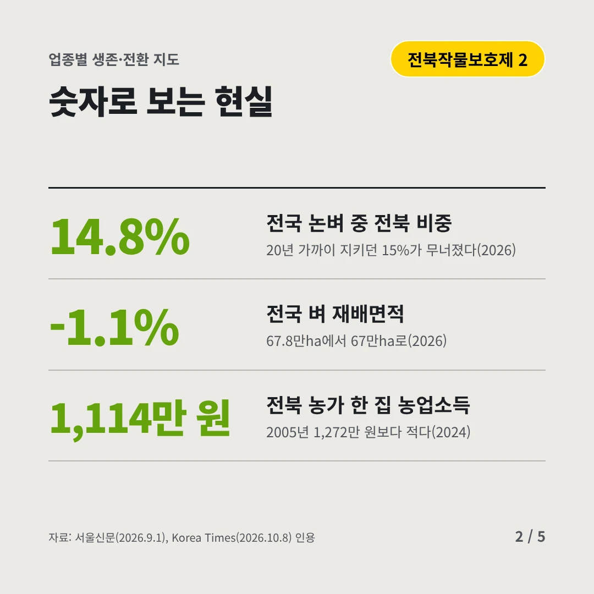
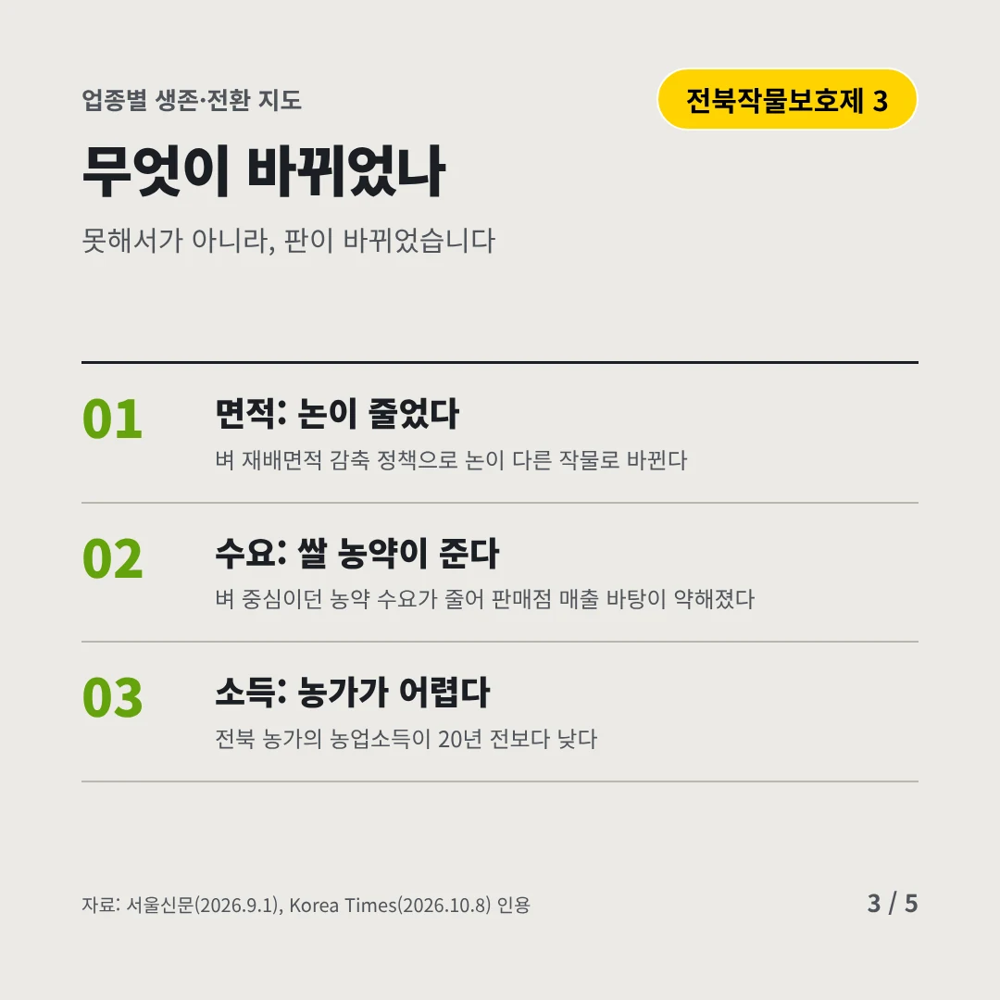
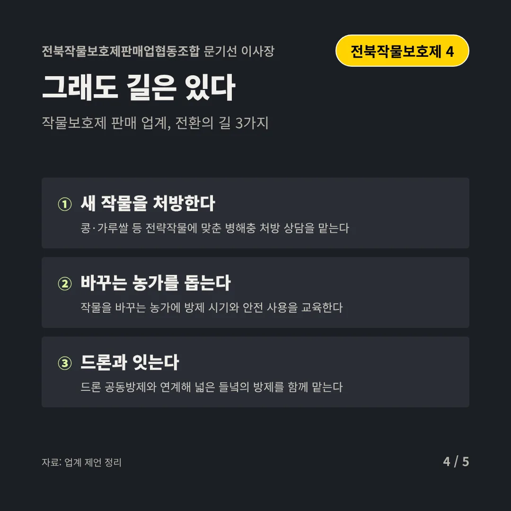
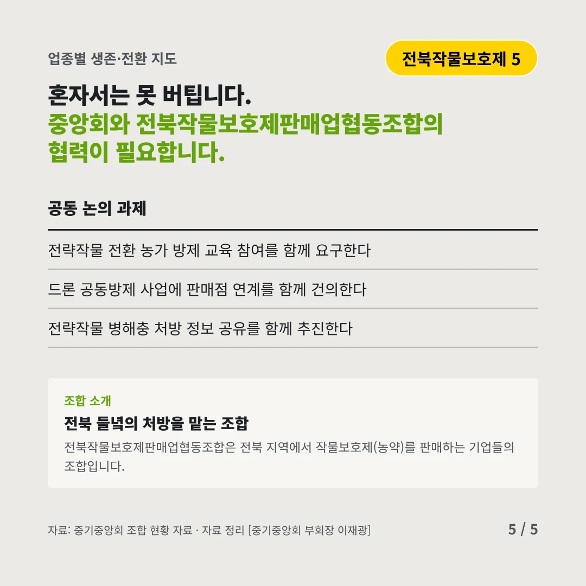
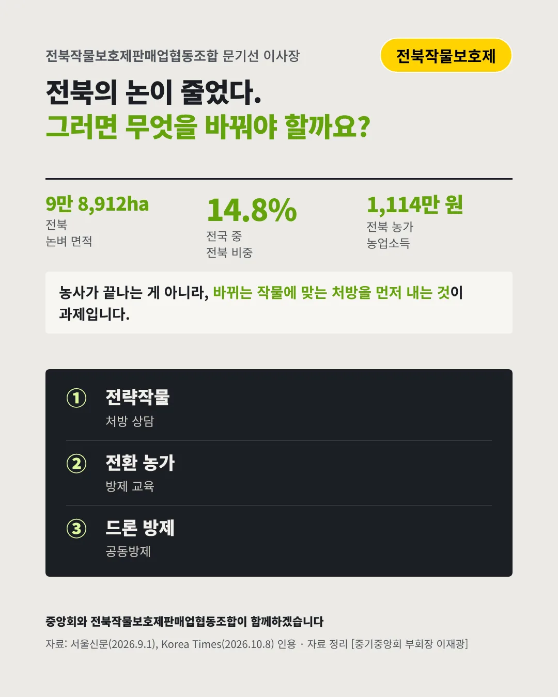

전북작물보호제판매업협동조합
농도 전북의 논이 줄었다, 방제 처방도 바뀌어야 한다
9만 8,912ha 올해 전북 논벼 재배면적






작물이 바뀌면 처방도 바뀌어야 합니다. 작물보호제 판매 업계는 어디로 가야 할까요?
숫자로 보는 현실
- 14.8%전국 논벼 중 전북 비중20년 가까이 지키던 15%가 무너졌다(2026)
- -1.1%전국 벼 재배면적67.8만ha에서 67만ha로(2026)
- 1,114만 원전북 농가 한 집 농업소득2005년 1,272만 원보다 적다(2024)
무엇이 바뀌었나
- 면적: 논이 줄었다벼 재배면적 감축 정책으로 논이 다른 작물로 바뀐다
- 수요: 쌀 농약이 준다벼 중심이던 농약 수요가 줄어 판매점 매출 바탕이 약해졌다
- 소득: 농가가 어렵다전북 농가의 농업소득이 20년 전보다 낮다
그래도 길은 있다
- 새 작물을 처방한다콩·가루쌀 등 전략작물에 맞춘 병해충 처방 상담을 맡는다
- 바꾸는 농가를 돕는다작물을 바꾸는 농가에 방제 시기와 안전 사용을 교육한다
- 드론과 잇는다드론 공동방제와 연계해 넓은 들녘의 방제를 함께 맡는다
한 장 요약

조합 소개
전북작물보호제판매업협동조합은 전북 지역에서 작물보호제(농약)를 판매하는 기업들의 조합입니다.
자료: 서울신문(2026.9.1), Korea Times(2026.10.8)